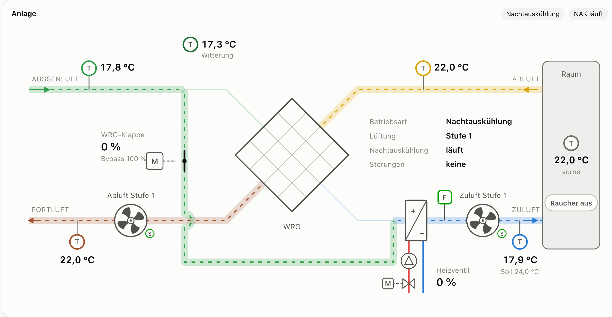
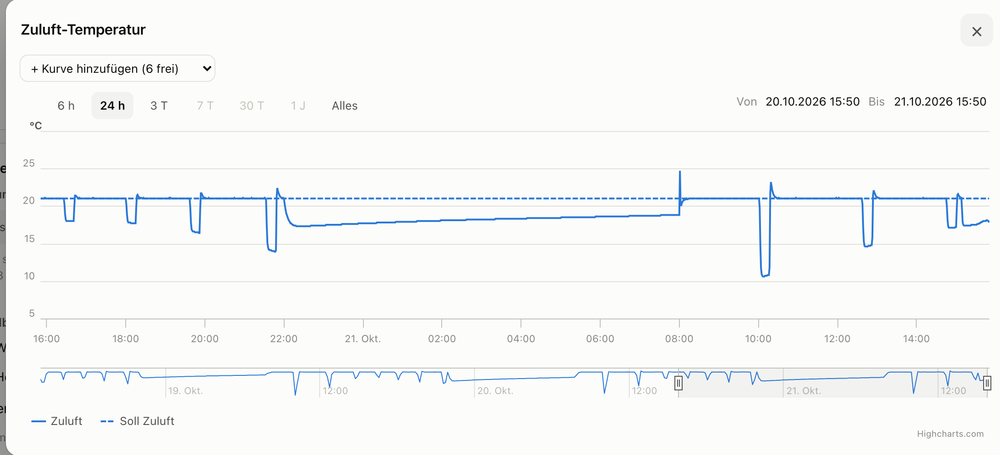
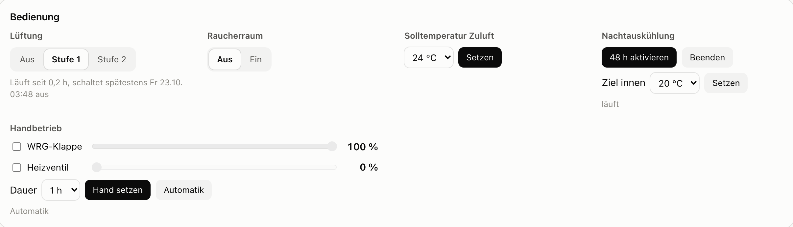

Anleitung für Bedienung per Telegram, Web-Panel und Dashboard
@krempelair_bot
Ansehen und bedienen, vom Handy aus, auch unterwegs. Anmeldung mit Passwort.
https://krempel.maurizi.ch
Nur ansehen: Anlagenschema, Temperaturen, Verläufe. Ohne Anmeldung.
http://192.168.1.100:8080
Ansehen und bedienen, inklusive Handbetrieb. Nur im WLAN «Krempel», Anmeldung mit Passwort.
Das Passwort ist für Telegram und Web-Panel dasselbe. Es steht nicht in dieser Anleitung; ihr bekommt es von der verantwortlichen Person.
| Befehl | Wirkung |
|---|---|
| /status | Temperaturen, Klappe und Heizventil in %, Betriebsart, Meldungen |
| /lueftung | Tasten: Stufe 1, Stufe 2, Aus, Raucherraum ein/aus |
| /temperatur | Solltemperatur der Zuluft, 17–26 °C |
| /nak | Nachtauskühlung für 48 h aktivieren oder beenden, Ziel 18–23 °C |
| /login · /logout | Chat an- bzw. abmelden; /hilfe zeigt alle Befehle |
/lueftung
Lüftung schalten (jetzt: aus, Raucherraum aus):
✅ Lüftung Stufe 1
https://krempel.maurizi.ch von überall, im Krempel auch http://192.168.1.100. Ohne Anmeldung, nur zum Ansehen.

| Farbe | Luft |
|---|---|
| grün | Aussenluft (angesaugt) |
| blau | Zuluft (in den Raum) |
| gelb | Abluft (aus dem Raum) |
| braun | Fortluft (nach draussen) |
| Kennfarben nach DIN EN 16798-3 | |
Jeder Fühler, die Klappe, das Ventil, die Pumpe und die Ventilatoren sind anklickbar: es öffnet sich der Verlauf dazu. Oben wählt ihr den Zeitraum (6 h bis «Alles»), unten mit dem kleinen Navigator verschiebt ihr ihn. Mit «+ Kurve hinzufügen» lassen sich bis zu sechs weitere Kurven dazuladen.

Nur aus dem WLAN «Krempel» erreichbar, nicht über krempel.maurizi.ch.

| Bereich | So geht's |
|---|---|
| Lüftung | Aus, Stufe 1 oder Stufe 2 antippen. |
| Raucherraum | Ein oder Aus. |
| Solltemperatur | Temperatur wählen, «Setzen». Gilt für die Zuluft. |
| Nachtauskühlung | «48 h aktivieren» oder «Beenden»; Ziel innen wählen, «Setzen». |
| Handbetrieb | WRG-Klappe und/oder Heizventil ankreuzen, Wert mit dem Regler wählen, Dauer 1–8 h, «Hand setzen». Danach geht es von selbst zurück auf Automatik; «Automatik» beendet sofort. |
| Automatik | Was passiert |
|---|---|
| Zuluft-Regelung | Hält die Zuluft auf der Solltemperatur: zuerst über den Wärmetauscher, erst dann mit dem Heizregister. |
| Kälterückgewinnung | Ist es draussen wärmer als drinnen, hält der Tauscher die kühle Innenluft im Haus. Kein Schalter nötig. |
| Nachtauskühlung | Nur wenn aktiviert (48 h): Ist es drinnen über dem Ziel und draussen deutlich kühler (mind. 3 K, über 10 °C), schaltet sie die Lüftung selbst auf Stufe 2, öffnet den Bypass und schliesst das Heizventil. Danach stellt sie die Lüftung zurück. |
| Laufzeitbegrenzung | Läuft die Lüftung 36 Stunden ohne Unterbruch, schaltet sie sich aus. Bot und Panel zeigen vorher «schaltet spätestens … aus». |
| Frostschutz | Meldet der Frostwächter, gehen Klappe und Heizventil in die Frostschutz-Stellung, egal was eingestellt ist. |
| Problem | Was tun |
|---|---|
| krempel.maurizi.ch: «nicht erreichbar» | Keine Verbindung zum Krempel (Internet oder Strom weg). Die Anlage regelt trotzdem weiter. Bei Dauer der verantwortlichen Person melden. |
| Bot antwortet nicht | Meist Internet im Krempel weg. Befehle, die während eines Ausfalls geschickt wurden, verwirft der Bot bewusst; danach nochmals senden. |
| «Bitte zuerst anmelden» | /login Passwort im privaten Chat mit dem Bot. |
| Panel lädt nicht | Seid ihr im WLAN «Krempel»? Adresse genau so: http://192.168.1.100:8080 (mit :8080, ohne https). |
| Meldung «Sammelalarm» oder «Strömungswächter» | Kommen an dieser Anlage immer wieder vor und halten sie nicht auf. Nur Frost stoppt. |
| Lüftung plötzlich aus | Laufzeitbegrenzung nach 36 h. Bei Bedarf einfach wieder einschalten. |